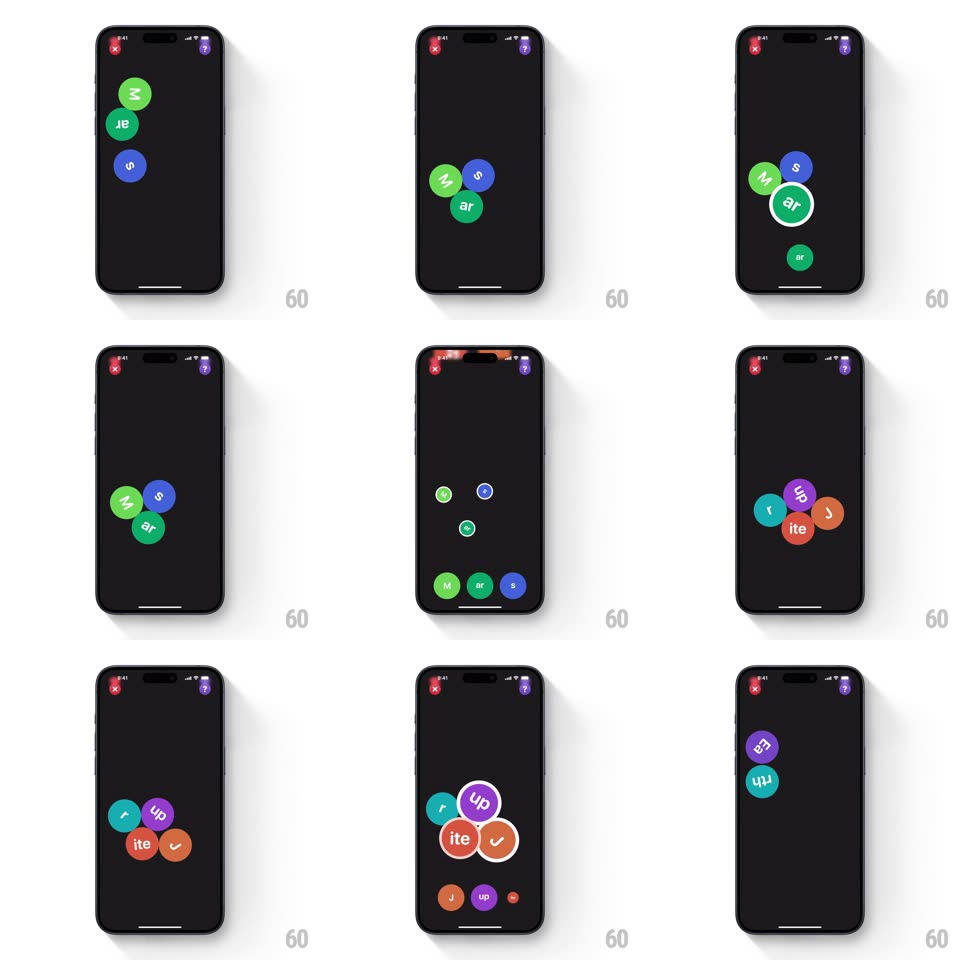

Media
Frame-by-frame

Rebuild this interaction 1:1: Study Snacks' word-building game - colored bubbles carrying word fragments (w, ds, s, ar, up, ite, r) float and collide with real physics on a dark canvas; you drag fragments together, correct joins lock with a white ring, and the finished word flies off to the top corner.

Rebuild this interaction 1:1: Study Snacks' word-building game - colored bubbles carrying word fragments (w, ds, s, ar, up, ite, r) float and collide with real physics on a dark canvas; you drag fragments together, correct joins lock with a white ring, and the finished word flies off to the top corner. ## Integration Integration: stack-agnostic spec - springs given as stiffness/damping, timed motions as duration + curve; map every value to your framework and animation library of choice. ## Scene Dark screen with close/profile buttons in the top corners. A handful of chunky colored bubbles (green, blue, purple, teal, orange), each with a white fragment, drifting and bumping. A joined pair shows a white highlight ring. Completed words collect as small chips near the top. ## Motion spec Pattern: physics-toy word assembly. - Idle: bubbles drift (sine wander +-16px, 2.8s, phase-offset) and collide with soft-body squish (contact compresses both along the collision axis ~8%, spring ~280/14 recovery) and a tiny rotation kick. - Drag: the grabbed bubble scales 1.1 and follows with slight lag (spring ~200/12 toward the finger) - it feels held, not glued; other bubbles scatter from its path. - Correct join: on proximity (<40px) the two snap together (spring ~420/16), a white ring flashes around the union (scale 1.3 fade, 300ms), and a haptic tick lands. - Wrong pair: they bounce apart (impulse along the contact normal) with a duller tick - no error chrome, just physics. - Word complete: the cluster shrinks slightly and launches to the top corner (ease-in 400ms, arc path), landing as a chip with a small pop (scale 0.7 -> 1, spring ~440/18). ## Calibration - Every collision is springy - nothing moves linearly anywhere in this game. - Fragment text stays upright even as bubbles rotate - readability beats realism. ## Reduced motion Bubbles hold still until dragged; joins fade instead of spring. ## Don't miss - The physics IS the feedback: right answers attract, wrong answers repel. - Lag on the dragged bubble is essential - rigid tracking kills the toy feel.